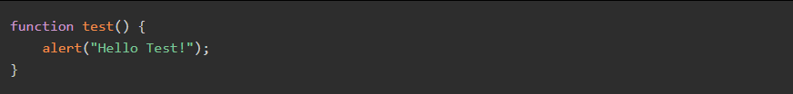
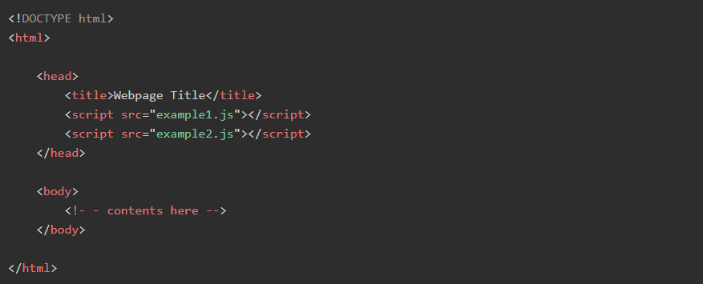

JAVASCRIPT and HTML
The introduction of JavaScript into web pages immediately ran into the Web's primary language, HTML. As the component of its original work on JavaScript, Netscape tried to find out how to make JavaScript coexist in HTML pages without causing any breaks on those pages, rendering in other browsers. Through trial and error and controversy, several decisions were finally made and agreed upon to bring universal scripting support to the Web. Most of the work done in these early days of the Web has endured and become official in the HTML specification. In this chapter, you will relate the JavaScript language with HTML.
Use of < script > Element< /script >
The primary technique of inserting JavaScript into an HTML page is through the < script > element. Netscape created this < script > element and first implemented it in the browser - Netscape Navigator version 2. Then it was later added to the formal HTML specification.
Six attributes are provided by the < script > element. These are:
CSS is said to as the cornerstone design tool of the World Wide Web along with HTML and JavaScript. CSS is intended for enabling the separation of appearance with content, which includes layout, coloring, and font styles. Such a smart approach can progress the accessibility of content, offer more flexibility, and organize in the presentation order. It allows multiple web pages to contribute to formatting by giving relevant CSS instructions in another file with the file extension .css. This separation of design implementation helps in reducing complexity as well as repetition in the structural content.
| Attribute | Description |
|---|---|
| async | Which indicates that the script ought to begin downloading immediately. |
| charset | Set the character set of the code particularizes using the src attribute. |
| defer | It indicates that the execution of the script can safely be deferred until after the document's content has been fully parsed and displayed. |
| language | Which indicates that the code is using the scripting language. |
| src | Which indicates that an external file that holds the code is to be executed. |
| type | is used to replace language; indicates the content type (also called MIME type) of the used scripting language. |
Example:
JAVASCRIPT placement within HTML
Traditionally, all < script > elements were positioned within the < head > element on an HTML document's page, such as in the example given below:
Example:
The primary purpose of this structuring was to keep external file references, both CSS and JavaScript files, in the exact location. Moreover, including all JavaScript files in the < head > of a document designates that all of the JavaScript code must have to be downloaded, then parsed and interpreted before the page begins rendering. Rendering means the moment when the browser receives the opening < body > tag in an HTML code. For pages that require a lot of JavaScript code, this can cause a noticeable delay in page rendering, during which time the browser will be entirely blank.
What is Deferred Attribute?
HTML 4.01 defines an attribute named defer for the < script > element. The use of defer indicates that a script won't change the page's structure as it executes. Likewise, the script can be run safely after parsing the whole page. Setting the defer attribute on an < script > element tells the browser that download should begin at once, but execution should be deferred: